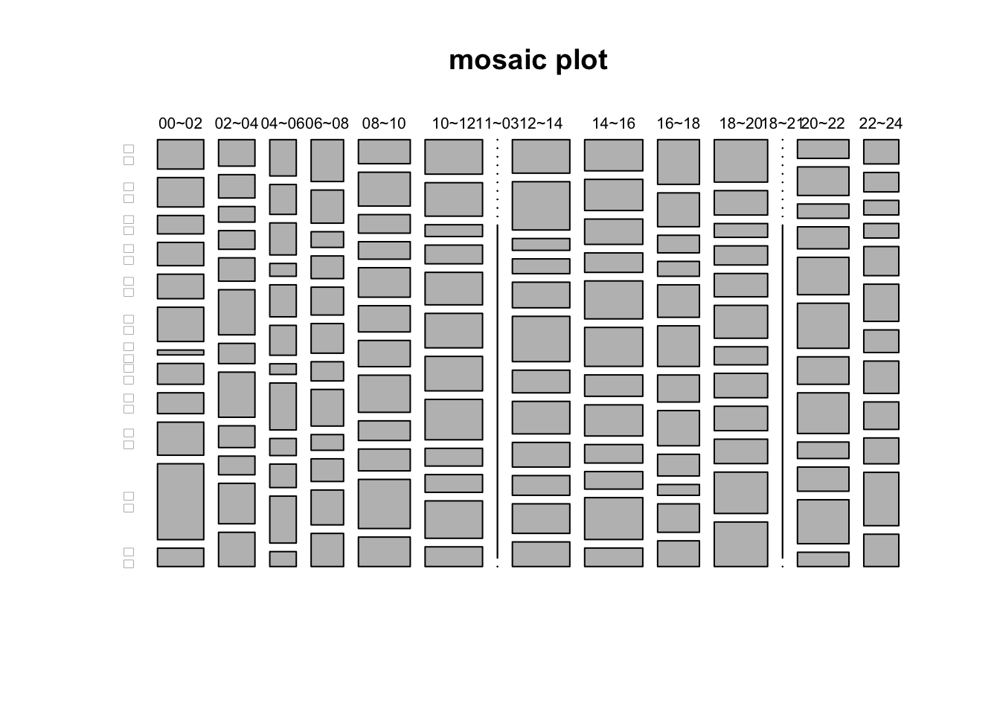
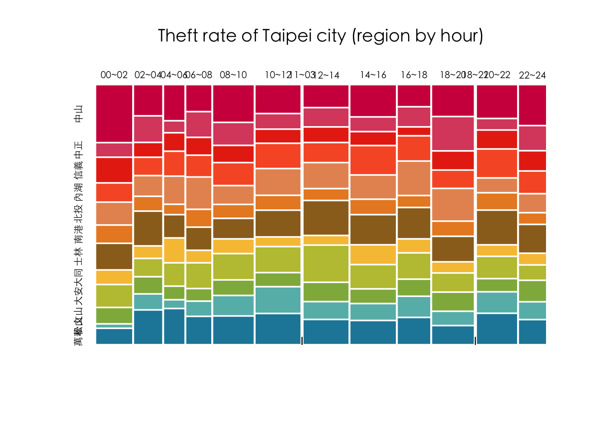
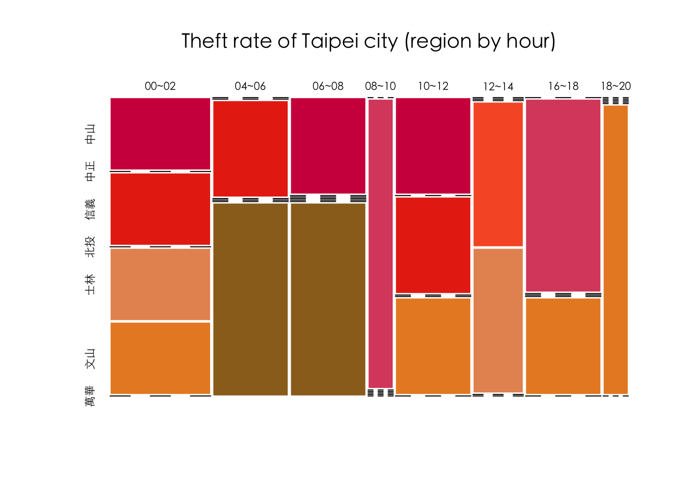

Chapter 5 Data Analysis with R
5.1 Case: Paid Maternal Leave
本案例將利用R來重製華盛頓郵報在2016/08/13的一篇談論美國婦女產假支薪情形的報導。這個案例中將會應用到data.frame和基本的繪圖與資料摘要方法。The case adaped Washington Post’s paid maternity leave as an exmaple to introduce basic skill of data.frame, plotting, and data mamipulation.
5.1.1 Reading .xlsx by readxl package
- readxl也包含在tidyverse的套件集中，所以應該已經在前次安裝過，不用特別安裝。
# Import readxl package
library(readxl)
options(stringsAsFactors = FALSE)# Use read_excel() to convert excel sheet to data.frame
df <- read_excel("data/WORLD-MACHE_Gender_6.8.15.xls", "Sheet1", col_names=T)5.1.2 Previewing data by View(), class(), dim(), str(), summary() and names()
# View(df)
class(df) # [1] "tbl_df" "tbl" "data.frame"## [1] "tbl_df" "tbl" "data.frame"dim(df)## [1] 197 156# Show names of variables (vectors, columns) by names()
names(df)## [1] "country" "iso2" "iso3"
## [4] "region" "wb_econ" "matleave_95"
## [7] "matleave_96" "matleave_97" "matleave_98"
## [10] "matleave_99" "matleave_00" "matleave_01"
## [13] "matleave_02" "matleave_03" "matleave_04"
## [16] "matleave_05" "matleave_06" "matleave_07"
## [19] "matleave_08" "matleave_09" "matleave_10"
## [22] "matleave_11" "matleave_12" "matleave_13"
## [25] "matleave_wrr_95" "matleave_wrr_96" "matleave_wrr_97"
## [28] "matleave_wrr_98" "matleave_wrr_99" "matleave_wrr_00"
## [31] "matleave_wrr_01" "matleave_wrr_02" "matleave_wrr_03"
## [34] "matleave_wrr_04" "matleave_wrr_05" "matleave_wrr_06"
## [37] "matleave_wrr_07" "matleave_wrr_08" "matleave_wrr_09"
## [40] "matleave_wrr_10" "matleave_wrr_11" "matleave_wrr_12"
## [43] "matleave_wrr_13" "bf_dur_95" "bf_dur_96"
## [46] "bf_dur_97" "bf_dur_98" "bf_dur_99"
## [49] "bf_dur_00" "bf_dur_01" "bf_dur_02"
## [52] "bf_dur_03" "bf_dur_04" "bf_dur_05"
## [55] "bf_dur_06" "bf_dur_07" "bf_dur_08"
## [58] "bf_dur_09" "bf_dur_10" "bf_dur_11"
## [61] "bf_dur_12" "bf_dur_13" "mat_bfeed_6mon_95"
## [64] "mat_bfeed_6mon_96" "mat_bfeed_6mon_97" "mat_bfeed_6mon_98"
## [67] "mat_bfeed_6mon_99" "mat_bfeed_6mon_00" "mat_bfeed_6mon_01"
## [70] "mat_bfeed_6mon_02" "mat_bfeed_6mon_03" "mat_bfeed_6mon_04"
## [73] "mat_bfeed_6mon_05" "mat_bfeed_6mon_06" "mat_bfeed_6mon_07"
## [76] "mat_bfeed_6mon_08" "mat_bfeed_6mon_09" "mat_bfeed_6mon_10"
## [79] "mat_bfeed_6mon_11" "mat_bfeed_6mon_12" "mat_bfeed_6mon_13"
## [82] "minage_fem_leg_95" "minage_fem_leg_96" "minage_fem_leg_97"
## [85] "minage_fem_leg_98" "minage_fem_leg_99" "minage_fem_leg_00"
## [88] "minage_fem_leg_01" "minage_fem_leg_02" "minage_fem_leg_03"
## [91] "minage_fem_leg_04" "minage_fem_leg_05" "minage_fem_leg_06"
## [94] "minage_fem_leg_07" "minage_fem_leg_08" "minage_fem_leg_09"
## [97] "minage_fem_leg_10" "minage_fem_leg_11" "minage_fem_leg_12"
## [100] "legal_diff_leg_95" "legal_diff_leg_96" "legal_diff_leg_97"
## [103] "legal_diff_leg_98" "legal_diff_leg_99" "legal_diff_leg_00"
## [106] "legal_diff_leg_01" "legal_diff_leg_02" "legal_diff_leg_03"
## [109] "legal_diff_leg_04" "legal_diff_leg_05" "legal_diff_leg_06"
## [112] "legal_diff_leg_07" "legal_diff_leg_08" "legal_diff_leg_09"
## [115] "legal_diff_leg_10" "legal_diff_leg_11" "legal_diff_leg_12"
## [118] "minage_fem_pc_95" "minage_fem_pc_96" "minage_fem_pc_97"
## [121] "minage_fem_pc_98" "minage_fem_pc_99" "minage_fem_pc_00"
## [124] "minage_fem_pc_01" "minage_fem_pc_02" "minage_fem_pc_03"
## [127] "minage_fem_pc_04" "minage_fem_pc_05" "minage_fem_pc_06"
## [130] "minage_fem_pc_07" "minage_fem_pc_08" "minage_fem_pc_09"
## [133] "minage_fem_pc_10" "minage_fem_pc_11" "minage_fem_pc_12"
## [136] "legal_diff_pc_95" "legal_diff_pc_96" "legal_diff_pc_97"
## [139] "legal_diff_pc_98" "legal_diff_pc_99" "legal_diff_pc_00"
## [142] "legal_diff_pc_01" "legal_diff_pc_02" "legal_diff_pc_03"
## [145] "legal_diff_pc_04" "legal_diff_pc_05" "legal_diff_pc_06"
## [148] "legal_diff_pc_07" "legal_diff_pc_08" "legal_diff_pc_09"
## [151] "legal_diff_pc_10" "legal_diff_pc_11" "legal_diff_pc_12"
## [154] "minwage_ppp_2013" "mw_overtime" "oecd"5.1.3 Select variables
# Select the 3rd and 6th to 24th columns
matleave <- df[ , c(3, 6:24)]
# Use class(), dim(), and str() to inspect the data
class(matleave)## [1] "tbl_df" "tbl" "data.frame"dim(matleave)## [1] 197 20str(matleave)## tibble [197 × 20] (S3: tbl_df/tbl/data.frame)
## $ iso3 : chr [1:197] "AFG" "ALB" "DZA" "AND" ...
## $ matleave_95: num [1:197] 2 5 3 2 2 2 2 3 1 5 ...
## $ matleave_96: num [1:197] 2 5 3 2 2 2 2 3 1 5 ...
## $ matleave_97: num [1:197] 2 5 3 2 2 2 2 3 1 5 ...
## $ matleave_98: num [1:197] 2 5 3 2 2 2 2 3 1 5 ...
## $ matleave_99: num [1:197] 2 5 3 2 2 2 2 3 1 5 ...
## $ matleave_00: num [1:197] 2 5 3 3 2 2 2 3 1 5 ...
## $ matleave_01: num [1:197] 2 5 3 3 2 2 2 3 1 5 ...
## $ matleave_02: num [1:197] 2 5 3 3 2 2 2 3 1 5 ...
## $ matleave_03: num [1:197] 2 5 3 3 2 2 2 3 1 5 ...
## $ matleave_04: num [1:197] 2 5 3 3 2 2 2 5 1 5 ...
## $ matleave_05: num [1:197] 2 5 3 3 2 2 2 5 1 5 ...
## $ matleave_06: num [1:197] 2 5 3 3 2 2 2 5 1 5 ...
## $ matleave_07: num [1:197] 2 5 3 3 2 2 2 5 1 5 ...
## $ matleave_08: num [1:197] 2 5 3 3 2 2 2 5 1 5 ...
## $ matleave_09: num [1:197] 2 5 3 3 2 2 2 5 1 5 ...
## $ matleave_10: num [1:197] 2 5 3 3 2 2 2 5 NA 5 ...
## $ matleave_11: num [1:197] 2 5 3 3 2 2 2 5 3 5 ...
## $ matleave_12: num [1:197] 2 5 3 3 2 2 2 5 3 5 ...
## $ matleave_13: num [1:197] 2 5 3 3 2 2 2 5 3 5 ...5.1.4 Check & Replace NAs
NA: Not Availablev[is.na(v)]will select all NA cells- 以0取代NA的資料格。避免繪圖產生錯誤
sum(is.na(matleave))的目的是檢測還有沒有NA值。如果有的話is.na()就會是TRUE，那麼加總後，如果不是0，那就代表還有NA。
# is.na() to indicate each element is NA or NOT(TRUE/FALSE)
head(is.na(matleave), n=20)## iso3 matleave_95 matleave_96 matleave_97 matleave_98 matleave_99
## [1,] FALSE FALSE FALSE FALSE FALSE FALSE
## [2,] FALSE FALSE FALSE FALSE FALSE FALSE
## [3,] FALSE FALSE FALSE FALSE FALSE FALSE
## [4,] FALSE FALSE FALSE FALSE FALSE FALSE
## [5,] FALSE FALSE FALSE FALSE FALSE FALSE
## [6,] FALSE FALSE FALSE FALSE FALSE FALSE
## [7,] FALSE FALSE FALSE FALSE FALSE FALSE
## [8,] FALSE FALSE FALSE FALSE FALSE FALSE
## [9,] FALSE FALSE FALSE FALSE FALSE FALSE
## [10,] FALSE FALSE FALSE FALSE FALSE FALSE
## [11,] FALSE FALSE FALSE FALSE FALSE FALSE
## [12,] FALSE FALSE FALSE FALSE FALSE FALSE
## [13,] FALSE FALSE FALSE FALSE FALSE FALSE
## [14,] FALSE FALSE FALSE FALSE FALSE FALSE
## [15,] FALSE FALSE FALSE FALSE FALSE FALSE
## [16,] FALSE FALSE FALSE FALSE FALSE FALSE
## [17,] FALSE FALSE FALSE FALSE FALSE FALSE
## [18,] FALSE FALSE FALSE FALSE FALSE FALSE
## [19,] FALSE FALSE FALSE FALSE FALSE FALSE
## [20,] FALSE FALSE FALSE FALSE FALSE FALSE
## matleave_00 matleave_01 matleave_02 matleave_03 matleave_04 matleave_05
## [1,] FALSE FALSE FALSE FALSE FALSE FALSE
## [2,] FALSE FALSE FALSE FALSE FALSE FALSE
## [3,] FALSE FALSE FALSE FALSE FALSE FALSE
## [4,] FALSE FALSE FALSE FALSE FALSE FALSE
## [5,] FALSE FALSE FALSE FALSE FALSE FALSE
## [6,] FALSE FALSE FALSE FALSE FALSE FALSE
## [7,] FALSE FALSE FALSE FALSE FALSE FALSE
## [8,] FALSE FALSE FALSE FALSE FALSE FALSE
## [9,] FALSE FALSE FALSE FALSE FALSE FALSE
## [10,] FALSE FALSE FALSE FALSE FALSE FALSE
## [11,] FALSE FALSE FALSE FALSE FALSE FALSE
## [12,] FALSE FALSE FALSE FALSE FALSE FALSE
## [13,] FALSE FALSE FALSE FALSE FALSE FALSE
## [14,] FALSE FALSE FALSE FALSE FALSE FALSE
## [15,] FALSE FALSE FALSE FALSE FALSE FALSE
## [16,] FALSE FALSE FALSE FALSE FALSE FALSE
## [17,] FALSE FALSE FALSE FALSE FALSE FALSE
## [18,] FALSE FALSE FALSE FALSE FALSE FALSE
## [19,] FALSE FALSE FALSE FALSE FALSE FALSE
## [20,] FALSE FALSE FALSE FALSE FALSE FALSE
## matleave_06 matleave_07 matleave_08 matleave_09 matleave_10 matleave_11
## [1,] FALSE FALSE FALSE FALSE FALSE FALSE
## [2,] FALSE FALSE FALSE FALSE FALSE FALSE
## [3,] FALSE FALSE FALSE FALSE FALSE FALSE
## [4,] FALSE FALSE FALSE FALSE FALSE FALSE
## [5,] FALSE FALSE FALSE FALSE FALSE FALSE
## [6,] FALSE FALSE FALSE FALSE FALSE FALSE
## [7,] FALSE FALSE FALSE FALSE FALSE FALSE
## [8,] FALSE FALSE FALSE FALSE FALSE FALSE
## [9,] FALSE FALSE FALSE FALSE TRUE FALSE
## [10,] FALSE FALSE FALSE FALSE FALSE FALSE
## [11,] FALSE FALSE FALSE FALSE FALSE FALSE
## [12,] FALSE FALSE FALSE FALSE FALSE FALSE
## [13,] FALSE FALSE FALSE FALSE FALSE FALSE
## [14,] FALSE FALSE FALSE FALSE FALSE FALSE
## [15,] FALSE FALSE FALSE FALSE FALSE FALSE
## [16,] FALSE FALSE FALSE FALSE FALSE FALSE
## [17,] FALSE FALSE FALSE FALSE FALSE FALSE
## [18,] FALSE FALSE FALSE FALSE FALSE FALSE
## [19,] FALSE FALSE FALSE FALSE FALSE FALSE
## [20,] FALSE TRUE TRUE FALSE FALSE FALSE
## matleave_12 matleave_13
## [1,] FALSE FALSE
## [2,] FALSE FALSE
## [3,] FALSE FALSE
## [4,] FALSE FALSE
## [5,] FALSE FALSE
## [6,] FALSE FALSE
## [7,] FALSE FALSE
## [8,] FALSE FALSE
## [9,] FALSE FALSE
## [10,] FALSE FALSE
## [11,] FALSE FALSE
## [12,] FALSE FALSE
## [13,] FALSE FALSE
## [14,] FALSE FALSE
## [15,] FALSE FALSE
## [16,] FALSE FALSE
## [17,] FALSE FALSE
## [18,] FALSE FALSE
## [19,] FALSE FALSE
## [20,] FALSE FALSE# Assign 0 to those NA data
matleave[is.na(matleave)] <- 0
# anyNA() to check if there are still NA cells.
anyNA(matleave)## [1] FALSE# sum(is.na()) to count the number of NA
sum(is.na(matleave))## [1] 05.1.5 Filtering data
5.1.5.1 Filtered by the last year value
# Use logical comparison to see if the last year equals to 5
# Assign matching data to var m5
m5 <- matleave[matleave$'matleave_13'==5, ]
# nrow() to count matching data
nrow(m5)## [1] 34# Is it possible to use length() to check the data length?
# matleave$'matleave_13'
# matleave$'matleave_13'==5
# length(matleave$'matleave_13'==5)5.1.6 Plotting
- Plotting the second rows and all columns except 1st column
- Question 為何要
unlist()？請試著執行barplot(matleave[2, -1])這個沒有unlist()的版本，看看會有什麼錯誤訊息。資料結構有何差異呢？ - 嘗試用
class()或str()嘗試觀察沒有unlist()版本的資料，看看資料型態和有unlist()的會有何不同？
5.1.6.1 Plotting one line
# barplot() the second row of m55
# barplot(m55[2, ]) # raise error
# barplot() the second row when neglecting the first column
# barplot(m55[2, -1]) # raise error
# Take a look at the data type of matleave[2, ]
class(matleave[2, -1])## [1] "tbl_df" "tbl" "data.frame"class(unlist(matleave[2, -1]))## [1] "numeric"# unlist() to convert a single row data.frame to a vector for barplot()
barplot(unlist(m55[2, -1]))
- Testing
# View(matleave[1]) # select the 1st variable
# View(matleave[ ,1]) # select the 1st column
# View(matleave[1, ]) # select the 1st row
class(m55[1]) # "tbl_df" "tbl" "data.frame"## [1] "tbl_df" "tbl" "data.frame"class(m55[ ,1]) # "tbl_df" "tbl" "data.frame"## [1] "tbl_df" "tbl" "data.frame"class(m55[1, ]) # "tbl_df" "tbl" "data.frame"## [1] "tbl_df" "tbl" "data.frame"class(m55$iso3) # character (vector)## [1] "character"5.1.6.2 More arguments (args)
# barplot() the unlisted second row (neglecting the first col)
barplot(unlist(m55[2, -1]))
# use ?barplot to know more argument of the function.
?barplot
# Add arguments ylim, space, border, and axat/yaxt one by one to barplot()
barplot(unlist(m55[2, -1]), ylim=c(0, 5))
barplot(unlist(m55[2, -1]), ylim=c(0, 5), space=0)
barplot(unlist(m55[2, -1]), ylim=c(0, 5), space=0, border=NA)
barplot(unlist(m55[2, -1]), ylim=c(0, 5), space=0, border=NA, xaxt="n", yaxt="n")
5.1.6.3 Plotting multiple lines
- 底下可以看見每一行非常相似且一致的特徵，僅有
matleave內的索引由1被列出至6。因此，最好的方法是用迴圈（for-loop）的方式將相同的程式碼，從1~6之間做六次。
# plot the first row
barplot(unlist(m55[1, -1]), ylim=c(0, 5), space=0, border=NA, xaxt="n", yaxt="n")
# plot the second to 6th rows
barplot(unlist(m55[2, -1]), ylim=c(0, 5), space=0, border=NA, xaxt="n", yaxt="n")
barplot(unlist(m55[3, -1]), ylim=c(0, 5), space=0, border=NA, xaxt="n", yaxt="n")
barplot(unlist(m55[4, -1]), ylim=c(0, 5), space=0, border=NA, xaxt="n", yaxt="n")
barplot(unlist(m55[5, -1]), ylim=c(0, 5), space=0, border=NA, xaxt="n", yaxt="n")
barplot(unlist(m55[6, -1]), ylim=c(0, 5), space=0, border=NA, xaxt="n", yaxt="n")5.1.6.4 for-loop to plot multiple lines
# use for loop and use i as index to barplot multiple subgraphs
for(i in 1:6){
barplot(unlist(m55[i, -1]), ylim=c(0, 5), space=0, border=NA, xaxt="n", yaxt="n")
}

5.1.6.5 Sub-plots
Check
?parto get paremeters of plotting**mai**: A numerical vector of the form c(bottom, left, top, right) which gives the margin size specified in inches.**mfcol, mfrow**:A vector of the form c(nr, nc). Subsequent figures will be drawn in an nr-by-nc array on the device by columns (mfcol), or rows (mfrow), respectively.
# use ?par to get more plotting parameters
?par
# use par() to set-up the layout of subgraphs
# use the parameter main=c(0.2, 0.2, 0.2, 0.2) to thrink the padding of figures.
par(mfrow=c(3,2), mai= c(0.2, 0.2, 0.2, 0.2))
for(i in 1:6){
barplot(unlist(m55[i, -1]), ylim=c(0, 5), space=0, border=NA, xaxt="n", yaxt="n")
}
# plot more rows to see what happens
par(mfrow=c(3,2), mai= c(0.2, 0.2, 0.2, 0.2))
for(i in 1:10){
barplot(unlist(m55[i, -1]), ylim=c(0, 5), space=0, border=NA, xaxt="n", yaxt="n")
}
# plot all subplots in a figure
# nrow() to check number of row of m55.
nrow(m55)## [1] 18# use par() to set-up plotting parameters.
par(mfrow=c(4, 6), mai= c(0.2, 0.2, 0.2, 0.2))
# use for-loop to plot all graph as subgraph
for (i in 1:nrow(m55)){
barplot(unlist(m55[i, -1]), border=NA, space=0, xaxt="n", yaxt="n", ylim = c(0,5))
}
par(mfrow=c(4,6), mai= c(0.2, 0.2, 0.2, 0.2))
for (i in 1:nrow(m55)){
barplot(unlist(m55[i, -1]), border=NA, space=0,xaxt="n", yaxt="n", ylim = c(0,5))
title(m55[i,1], line = -4, cex.main=3)
}
5.1.7 Practice02_1_1 Plotting more
# plotting matleave_95 != 5 but matleve_13 == 5
# plotting for matleave_13 == 45.1.8 Practice02_2_2 selecting and filtering by dplyr I
df <- read_excel("data/WORLD-MACHE_Gender_6.8.15.xls", "Sheet1", col_names=T)
# select columns by index
# matleave <- df[ , c(3, 6:24)]
# select all NA cells and assign 0 to them
# matleave[is.na(matleave)] <- 0
# filter rows by condition
# m5 <- matleave[matleave$'matleave_13' == 5, ]
# filter rows by condition
# m55<- m5[m5$'matleave_95' == 5,]
# plot
par(mfrow=c(4,6), mai= c(0.2, 0.2, 0.2, 0.2))
for (i in c(1:nrow(m55))){
barplot(unlist(m55[i,-1]),
border=NA, space=0,xaxt="n", yaxt="n", ylim = c(0,5))
title(m55[i,1], line = -4, cex.main=3)
}
5.1.9 (More) Clean version
# readxl::read_excel() to import the xls file
df <- read_excel("data/WORLD-MACHE_Gender_6.8.15.xls", "Sheet1", col_names=T)
# select iso3, and matleave columns by index
matleave <- df[ , c(3, 6:24)]
# str() to inspect the data structure of
str(matleave)## tibble [197 × 20] (S3: tbl_df/tbl/data.frame)
## $ iso3 : chr [1:197] "AFG" "ALB" "DZA" "AND" ...
## $ matleave_95: num [1:197] 2 5 3 2 2 2 2 3 1 5 ...
## $ matleave_96: num [1:197] 2 5 3 2 2 2 2 3 1 5 ...
## $ matleave_97: num [1:197] 2 5 3 2 2 2 2 3 1 5 ...
## $ matleave_98: num [1:197] 2 5 3 2 2 2 2 3 1 5 ...
## $ matleave_99: num [1:197] 2 5 3 2 2 2 2 3 1 5 ...
## $ matleave_00: num [1:197] 2 5 3 3 2 2 2 3 1 5 ...
## $ matleave_01: num [1:197] 2 5 3 3 2 2 2 3 1 5 ...
## $ matleave_02: num [1:197] 2 5 3 3 2 2 2 3 1 5 ...
## $ matleave_03: num [1:197] 2 5 3 3 2 2 2 3 1 5 ...
## $ matleave_04: num [1:197] 2 5 3 3 2 2 2 5 1 5 ...
## $ matleave_05: num [1:197] 2 5 3 3 2 2 2 5 1 5 ...
## $ matleave_06: num [1:197] 2 5 3 3 2 2 2 5 1 5 ...
## $ matleave_07: num [1:197] 2 5 3 3 2 2 2 5 1 5 ...
## $ matleave_08: num [1:197] 2 5 3 3 2 2 2 5 1 5 ...
## $ matleave_09: num [1:197] 2 5 3 3 2 2 2 5 1 5 ...
## $ matleave_10: num [1:197] 2 5 3 3 2 2 2 5 NA 5 ...
## $ matleave_11: num [1:197] 2 5 3 3 2 2 2 5 3 5 ...
## $ matleave_12: num [1:197] 2 5 3 3 2 2 2 5 3 5 ...
## $ matleave_13: num [1:197] 2 5 3 3 2 2 2 5 3 5 ...# select all NA cells and assign 0 to them
matleave[is.na(matleave)] <- 0
# filter rows by condition
m5 <- matleave[matleave$'matleave_13' == 5, ]
# filter rows by condition
m55<- m5[m5$'matleave_95' == 5,]
# plot
par(mfrow=c(4,6), mai= c(0.2, 0.2, 0.2, 0.2))
for (i in c(1:nrow(m55))){
barplot(unlist(m55[i,-1]),
border=NA, space=0,xaxt="n", yaxt="n", ylim = c(0,5))
title(m55[i,1], line = -4, cex.main=3)
}
library(tidyverse)
options(stringsAsFactors = F)
options(scipen = 999)
library(readxl)
read_excel("data/WORLD-MACHE_Gender_6.8.15.xls", "Sheet1", col_names=T) %>%
select(iso3, 6:24) %>%
filter(matleave_13 == 5, matleave_95 == 5) %>%
gather("year", "degree", 2:20) %>%
# spread(year, degree, fill = 0) %>% View
replace_na(list(degree = 0)) %>%
mutate(year2 = as.POSIXct(strptime(year, "matleave_%y"))) %>%
mutate(year3 = lubridate::year(year2)) %>%
ggplot() +
aes(year3, degree) +
geom_col(color = "royalblue", fill = "royalblue") +
facet_wrap(~ iso3) +
theme_void()
5.2 Pivot Analysis on TP Theft
5.2.1 讀取檔案
首先要至臺北資料大平台上查詢「住宅竊盜」，可以找到臺北市住宅竊盜點位資訊。將該CSV檔下載至個人本機端，置入data 資料夾中，便可以用read.csv()讀取該檔案。
read.csv()to read csv and convert it to a data.frame
df <- read.csv("data/臺北市住宅竊盜點位資訊-UTF8-BOM-1.csv")
head(df) ## 編號 案類 發生日期 發生時段 發生地點
## 1 1 住宅竊盜 1030623 08~10 臺北市中正區廈門街91~120號
## 2 2 住宅竊盜 1040101 00~02 臺北市文山區萬美里萬寧街1~30號
## 3 3 住宅竊盜 1040101 00~02 臺北市信義區富台里忠孝東路5段295巷6弄1~30號
## 4 4 住宅竊盜 1040101 06~08 臺北市中山區新生北路1段91~120號
## 5 5 住宅竊盜 1040101 10~12 臺北市文山區明興里興隆路4段1~30號
## 6 6 住宅竊盜 1040102 00~02 臺北市士林區天福里1鄰忠誠路2段130巷1~30號str(df) # Checking the strcutrue of it## 'data.frame': 3347 obs. of 5 variables:
## $ 編號 : int 1 2 3 4 5 6 7 8 9 10 ...
## $ 案類 : chr "住宅竊盜" "住宅竊盜" "住宅竊盜" "住宅竊盜" ...
## $ 發生日期: int 1030623 1040101 1040101 1040101 1040101 1040102 1040102 1040102 1040102 1040104 ...
## $ 發生時段: chr "08~10" "00~02" "00~02" "06~08" ...
## $ 發生地點: chr "臺北市中正區廈門街91~120號" "臺北市文山區萬美里萬寧街1~30號" "臺北市信義區富台里忠孝東路5段295巷6弄1~30號" "臺北市中山區新生北路1段91~120號" ...summary(df) # glimpse() is the tibble package's function.## 編號 案類 發生日期 發生時段
## Min. : 1.0 Length:3347 Min. :1030623 Length:3347
## 1st Qu.: 837.5 Class :character 1st Qu.:1050320 Class :character
## Median :1674.0 Mode :character Median :1060708 Mode :character
## Mean :1674.0 Mean :1063954
## 3rd Qu.:2510.5 3rd Qu.:1080306
## Max. :3347.0 Max. :1110328
## 發生地點
## Length:3347
## Class :character
## Mode :character
##
##
## 用readr::read_csv()來讀取。。除了 base套件的read.csv()外，也可使用readr套件的read_csv()函式來讀取，該套件屬於tidyverse套件系的其中一個套件，如果已經有用install.packages("tidyverse")安裝過，只要用library(tidyverse)就可以使用read_csv()函式。在此鼓勵各位使用tidyverse系列套件。普遍來說，read_csv() 的功能和效果都會比read.csv()好，該函式還會自動猜測每個變數的變數型態並直接進行轉換（尤其是有時間欄位的時候，會非常方便）。
- 除錯：萬一遇到中文檔案會有讀檔編碼問題時，有可能該檔案是用big5來儲存的，可以在
read_csv()中設定locale來指定讀取的編碼方法。如read_csv(url, locale = locale(encoding = "Big5"))
library(readr)
df <- read_csv("data/臺北市住宅竊盜點位資訊-UTF8-BOM-1.csv")
# df <- read_csv("data/臺北市住宅竊盜點位資訊-UTF8-BOM-1.csv", locale = locale(encoding = "Big5"))
df## # A tibble: 3,347 × 5
## 編號 案類 發生日期 發生時段 發生地點
## <dbl> <chr> <dbl> <chr> <chr>
## 1 1 住宅竊盜 1030623 08~10 臺北市中正區廈門街91~120號
## 2 2 住宅竊盜 1040101 00~02 臺北市文山區萬美里萬寧街1~30號
## 3 3 住宅竊盜 1040101 00~02 臺北市信義區富台里忠孝東路5段295巷6弄1~30號
## 4 4 住宅竊盜 1040101 06~08 臺北市中山區新生北路1段91~120號
## 5 5 住宅竊盜 1040101 10~12 臺北市文山區明興里興隆路4段1~30號
## 6 6 住宅竊盜 1040102 00~02 臺北市士林區天福里1鄰忠誠路2段130巷1~30號
## 7 7 住宅竊盜 1040102 06~08 臺北市萬華區糖?里大理街159巷1~30號
## 8 8 住宅竊盜 1040102 06~08 臺北市萬華區糖?里大理街159巷1~30號
## 9 9 住宅竊盜 1040102 10~12 臺北市中山區吉林路121~150號
## 10 10 住宅竊盜 1040104 10~12 臺北市信義區五常里永吉路225巷32弄1~30號
## # … with 3,337 more rows直接依資料網址讀取檔案。現在的程式語言所設計的讀取檔案函式通常會允許使用者直接讀取資料所在的URL。所以，我們可以直接從網路上載入台北市竊盜案資料。首先要至臺北資料大平台上查詢「住宅竊盜」，可以找到臺北市住宅竊盜點位資訊，點選後對右上方的下載按右鍵可取得鏈結到該資料的URL（如https://data.taipei/api/getDatasetInfo/downloadResource?id=68785231-d6c5-47a1-b001-77eec70bec02&rid=93d9bc2d-af08-4db7-a56b-9f0a49226fa3）。
由於該資料網址似非永久網址，故本範例並未執行以下程式碼，僅提供範例程式碼讓個人替換網址來做測試。
(參考) 用R程式將該網址的檔案抓回本機端儲存。部分Mac電腦無法使用read.csv()從網路上取得資料又轉為data.frame，一個可行的辦法是先用GET(url,write_disk("data/tptheft.csv"))將其取回並命名為data/tptheft.csv，之後再用df <- read.csv("data/tptheft.csv")直接讀取該檔案。
5.2.2 查看資料內容
View(df)用RStudio所提供的GUI直接觀看變數。自行移去#註解符號來測試，因為knit成html檔時，有View()的指令都會造成knit程序中斷。head(df)取前面六筆資料（也就是六列的資料來概觀該資料）class(df)印出該str(df)
# View(df)
head(df) # get first part of the data.frame## # A tibble: 6 × 5
## 編號 案類 發生日期 發生時段 發生地點
## <dbl> <chr> <dbl> <chr> <chr>
## 1 1 住宅竊盜 1030623 08~10 臺北市中正區廈門街91~120號
## 2 2 住宅竊盜 1040101 00~02 臺北市文山區萬美里萬寧街1~30號
## 3 3 住宅竊盜 1040101 00~02 臺北市信義區富台里忠孝東路5段295巷6弄1~30號
## 4 4 住宅竊盜 1040101 06~08 臺北市中山區新生北路1段91~120號
## 5 5 住宅竊盜 1040101 10~12 臺北市文山區明興里興隆路4段1~30號
## 6 6 住宅竊盜 1040102 00~02 臺北市士林區天福里1鄰忠誠路2段130巷1~30號class(df)## [1] "spec_tbl_df" "tbl_df" "tbl" "data.frame"str(df)## spec_tbl_df [3,347 × 5] (S3: spec_tbl_df/tbl_df/tbl/data.frame)
## $ 編號 : num [1:3347] 1 2 3 4 5 6 7 8 9 10 ...
## $ 案類 : chr [1:3347] "住宅竊盜" "住宅竊盜" "住宅竊盜" "住宅竊盜" ...
## $ 發生日期: num [1:3347] 1030623 1040101 1040101 1040101 1040101 ...
## $ 發生時段: chr [1:3347] "08~10" "00~02" "00~02" "06~08" ...
## $ 發生地點: chr [1:3347] "臺北市中正區廈門街91~120號" "臺北市文山區萬美里萬寧街1~30號" "臺北市信義區富台里忠孝東路5段295巷6弄1~30號" "臺北市中山區新生北路1段91~120號" ...
## - attr(*, "spec")=
## .. cols(
## .. 編號 = col_double(),
## .. 案類 = col_character(),
## .. 發生日期 = col_double(),
## .. 發生時段 = col_character(),
## .. 發生地點 = col_character()
## .. )
## - attr(*, "problems")=<externalptr>summary(df)## 編號 案類 發生日期 發生時段
## Min. : 1.0 Length:3347 Min. :1030623 Length:3347
## 1st Qu.: 837.5 Class :character 1st Qu.:1050320 Class :character
## Median :1674.0 Mode :character Median :1060708 Mode :character
## Mean :1674.0 Mean :1063954
## 3rd Qu.:2510.5 3rd Qu.:1080306
## Max. :3347.0 Max. :1110328
## 發生地點
## Length:3347
## Class :character
## Mode :character
##
##
## # look up help
help(summary)
?summary5.2.3 觀察資料維度
e.g., dim(), ncol(), nrow(),length()
dim(df)## [1] 3347 5ncol(df)## [1] 5nrow(df)## [1] 3347length(df)## [1] 55.2.4 觀察變數名稱
names(df)列出變數名稱df$發生地點顯示該變數內容df$發生時段顯示該變數內容length(df$發生時段)顯示該變數的長度（相當於有幾個）
names(df)## [1] "編號" "案類" "發生日期" "發生時段" "發生地點"head(df$發生地點)## [1] "臺北市中正區廈門街91~120號"
## [2] "臺北市文山區萬美里萬寧街1~30號"
## [3] "臺北市信義區富台里忠孝東路5段295巷6弄1~30號"
## [4] "臺北市中山區新生北路1段91~120號"
## [5] "臺北市文山區明興里興隆路4段1~30號"
## [6] "臺北市士林區天福里1鄰忠誠路2段130巷1~30號"head(df$發生時段)## [1] "08~10" "00~02" "00~02" "06~08" "10~12" "00~02"length(df$發生時段)## [1] 33475.2.5 萃取所需新變項
該data.frame包含編號、案類、發生日期、發生時段、發生地點五個變項。其中比較有意義的應該是發生日期、發生時段和發生地點。然而，發生地點幾乎是完整地址，除非要繪製發生的地圖點位地圖，才會需要近乎完整的地址。假設我們的目標是抽取出台北市的「行政區」，發生地點的格式還蠻一致的如「臺北市中正區廈門街91120號」。因此，我們只要抽出發生地點的第4到第5個字，或者第46個字即可。
從一個字串中抽取出第n個字到第m個字，要用substr()或stringr套件的str_sub()。可以用?substr或?str_sub查詢help中的相關用法。在此
- 我將中文變數
現在時間的資料指給一個新的英文變項time。 - 從變數
發生地點，用substr()取出行政區（region） - 或用
stringr::str_sub() ?substr查詢其用法和意義。相當於getting sub string since x to y。
# Get substring of var "發生時段" and assign to a new time var
df$time <- df$發生時段
# Get substring of var "發生地點" and assign to a new region var
df$region <- substr(df$發生地點, 4, 5)
df %>% head() %>% knitr::kable()| 編號 | 案類 | 發生日期 | 發生時段 | 發生地點 | time | region |
|---|---|---|---|---|---|---|
| 1 | 住宅竊盜 | 1030623 | 08~10 | 臺北市中正區廈門街91~120號 | 08~10 | 中正 |
| 2 | 住宅竊盜 | 1040101 | 00~02 | 臺北市文山區萬美里萬寧街1~30號 | 00~02 | 文山 |
| 3 | 住宅竊盜 | 1040101 | 00~02 | 臺北市信義區富台里忠孝東路5段295巷6弄1~30號 | 00~02 | 信義 |
| 4 | 住宅竊盜 | 1040101 | 06~08 | 臺北市中山區新生北路1段91~120號 | 06~08 | 中山 |
| 5 | 住宅竊盜 | 1040101 | 10~12 | 臺北市文山區明興里興隆路4段1~30號 | 10~12 | 文山 |
| 6 | 住宅竊盜 | 1040102 | 00~02 | 臺北市士林區天福里1鄰忠誠路2段130巷1~30號 | 00~02 | 士林 |
5.2.6 (練習) 萃取month變項
除了時間和地區可能會有差別外，那月份會不會竊盜案的數量也有差異呢？會不會冬天小偷也都在家休息了，夏天多呢？請嘗試從發生日期萃取出竊盜案發生的月份，並儲存為一個新的變項month。
# YOUR CODE SHOULD BE HERE5.2.7 IV. 樞紐分析：計數、加總與彙整。
Pivot analysis: Counting and Summarizing 清理完資料後，我們要回答的第一個數據問題通常是「那XXX的案例有幾個？」例如：大安區有多少竊盜案？10~12這個時段有多少案例。
5.2.8 方法一：Counting by table()
table()函式可以對Vector中的值進行計數（Counting）。table(df$time) 相當於去計數不同的時間區間出現多少起案例；table(df$region) 相當於去計數不同地區各出現多少起案例。
提示：可以用class(tb_1) 觀察用table() 計數後所產生的資料型態（table）。
# counting the frequency of time variable
(tb_1 <- table(df$time)) ##
## 00~02 02~04 03~05 04~06 05~07 06~08 08~10 09~11 10~12 11~03 11~13 12~14 12~15
## 272 214 8 156 23 191 305 6 338 1 26 338 2
## 14~16 15~17 15~18 16~18 17~19 18~20 18~21 19~21 20~22 21~23 21~24 22~24 23~01
## 342 3 1 246 21 314 1 4 303 5 1 206 20class(tb_1) # table## [1] "table"# counting the frequency of region variable
table(df$region)##
## 北投 大安 大同 南港 內湖 士林 松山 萬華 文山 信義 中山 中正
## 318 311 172 181 303 373 220 350 204 214 438 2635.2.9 方法二：Counting by tapply()
我們也可用tapply() 函式來達到一樣的目的。Apply家族的函式都是，針對某個資料，將某個函式套用到某個物件上。tapply() 即是用來做計數的，tapply(df$編號, df$time, length)有三個輸入，第一個輸入為整體物件，第二個輸入為要據以彙整的變項，在此為df$time，第三個是要用來彙整的函式，因為這裡要做計數，所以要用length函式。
註：同樣用class()來觀察彙整後的資料型態為array，和前者的table資料型態不同。
# tapply() one arbitrary var by var time with length() function
(tb_2 <- tapply(df$編號, df$time, length))## 00~02 02~04 03~05 04~06 05~07 06~08 08~10 09~11 10~12 11~03 11~13 12~14 12~15
## 272 214 8 156 23 191 305 6 338 1 26 338 2
## 14~16 15~17 15~18 16~18 17~19 18~20 18~21 19~21 20~22 21~23 21~24 22~24 23~01
## 342 3 1 246 21 314 1 4 303 5 1 206 20class(tb_2)## [1] "array"# tapply() one arbitrary var by var region with length() function
tapply(df$編號, df$region, length)## 北投 大安 大同 南港 內湖 士林 松山 萬華 文山 信義 中山 中正
## 318 311 172 181 303 373 220 350 204 214 438 2635.2.10 V. 依照變數值篩選資料
該項竊盜案資料整理時經常不慎用不同的時間區間來標記，有時候也會不小心把新北市的資料給那進來，所以需要做資料篩選。從各個時間區間的竊盜案出現次數來觀察，有少數的案件出現在奇數的時間區間如09~11或12~15等等需要篩除；從各個行政區的竊盜案出現次數來觀察，確實都是台北市的竊盜案。
接下來要用base套件的R，根據某個變數值（例如上述的時間）來篩出符合條件的資料，或者篩去不符合條件的資料。其語法是要在df[ , ]逗號前加上篩選的條件，也就是對資料列進行篩選，篩出或篩除都是以整列為單位。在此的條件是df$time在00~02、02~04、…之間；或者是df$time不在03~05、05~07、…之間。表示法分別如下：
df$time %in% c("00~02", "02~04", "04~6",...)
!df$time %in% c("03~05", "05~07", ...)%in%表示的是左方df$time的值是否是右方Vector中的其中一個如果要表示不包含，就在
df%time加一個NOT，也就是!。
依照各組時間的案例個數統計後，篩除資料未足100的時間區間如下，最後再用table(df$time) 計算一次，發現每個時段都兩三、百個案例，且涵蓋整日的時間。清理後沒有重疊的時間區間，做類別資料分析會比較準確。
# filter out irrelevant timestamp
df <- df[!df$time %in% c("03~05", "05~07", "09~11", "11~13", "12~15", "15~17", "15~18", "17~19", " 18~21", "19~21", "21~23", "21~24", "23~01"), ]
table(df$time)##
## 00~02 02~04 04~06 06~08 08~10 10~12 11~03 12~14 14~16 16~18 18~20 18~21 20~22
## 272 214 156 191 305 338 1 338 342 246 314 1 303
## 22~24
## 206# filter out irrelevant region(area)
# df <- df[!df$region %in% c("三重", "中和", "淡水", "板橋"), ]5.2.11 VI. 雙變數樞紐分析
類別變項分析通常是要考驗兩個變項間的關係，從上述的計數中，我可以看見不同行政區或者不同時間的竊盜案數量，但我進一步想知道，那不同行政區的竊盜案常發生時間是否不同？這時後就要做時間和行政區的交叉分析。我們同樣可以用table()和tapply()來做兩個變項的交叉分析，寫法如下。
5.2.11.1 (1) by table()
用table()來交叉分析的結果如下，所得到的結果之變數型態仍是table型態。
# Tabulating time and region variables
(res_table <- table(df$time, df$region))##
## 北投 大安 大同 南港 內湖 士林 松山 萬華 文山 信義 中山 中正
## 00~02 24 24 15 19 20 28 4 17 17 27 62 15
## 02~04 17 15 10 12 15 29 13 29 14 12 26 22
## 04~06 17 14 15 6 15 14 5 22 8 11 22 7
## 06~08 24 19 9 13 16 17 11 21 9 13 20 19
## 08~10 22 31 17 16 27 24 24 34 18 20 45 27
## 10~12 35 34 12 19 33 35 35 41 18 18 38 20
## 11~03 0 0 0 0 0 0 0 0 0 0 1 0
## 12~14 34 49 12 15 26 46 23 33 25 20 30 25
## 14~16 32 32 26 20 39 40 22 32 19 18 43 19
## 16~18 33 25 13 11 24 30 20 26 16 8 21 19
## 18~20 40 23 13 18 22 31 17 23 23 23 39 42
## 18~21 0 0 0 0 0 0 0 0 0 0 1 0
## 20~22 17 26 13 20 34 41 25 37 15 22 40 13
## 22~24 15 12 9 9 18 23 14 20 17 16 33 20# Checking it class and its content
class(res_table)## [1] "table"5.2.11.2 (2) by tapply()
用tapply()來做兩個變數交叉分析的語法如下，必須要把兩個Vector包在一個list()中。其他不變。兩個變項用tapply()交叉分析後的結果，變數型態會變成matrix。前者用table()來交叉分析的仍是table型態。
res_tapply <- tapply(df$編號, list(df$time, df$region), length)
class(res_tapply)## [1] "matrix" "array"res_tapply## 北投 大安 大同 南港 內湖 士林 松山 萬華 文山 信義 中山 中正
## 00~02 24 24 15 19 20 28 4 17 17 27 62 15
## 02~04 17 15 10 12 15 29 13 29 14 12 26 22
## 04~06 17 14 15 6 15 14 5 22 8 11 22 7
## 06~08 24 19 9 13 16 17 11 21 9 13 20 19
## 08~10 22 31 17 16 27 24 24 34 18 20 45 27
## 10~12 35 34 12 19 33 35 35 41 18 18 38 20
## 11~03 NA NA NA NA NA NA NA NA NA NA 1 NA
## 12~14 34 49 12 15 26 46 23 33 25 20 30 25
## 14~16 32 32 26 20 39 40 22 32 19 18 43 19
## 16~18 33 25 13 11 24 30 20 26 16 8 21 19
## 18~20 40 23 13 18 22 31 17 23 23 23 39 42
## 18~21 NA NA NA NA NA NA NA NA NA NA 1 NA
## 20~22 17 26 13 20 34 41 25 37 15 22 40 13
## 22~24 15 12 9 9 18 23 14 20 17 16 33 20# View(res)5.2.11.3 (3) by dplyr::count()
這邊多介紹一個用dplyr套件的count()函式來做交叉分析的方法（未來會常用這個方法，因為dplyr是tidyverse系列套件的核心套件。dplyr的函式第一個參數永遠是該data.frame， 例如count()；後面time與region則是這個data.frame中的兩個變項。不像tapply()或table()的結果一樣，欄與列分別為time與region，count()出來的結果會有兩個變項分別是指定要計數的time與region ，且會新增一個變項n，代表這組數據（time x region）共有幾個。這種表達型態通常稱為long-table（長表）、而tapply()或table() 的結果通常稱為wide-table（寬表）為典型的交叉分析表。
目前大部分的類別資料分析還是會採用交叉分析表的型態，但未來我們要用tidyverse系列套件做大量的數據彙整或視覺化時，都會盡可能想辦法轉為Long-table型態，讓每一欄剛好就是一個變項。只要是tidyverse系列套件所計算出來的資料型態幾乎都是類似data.frame的型態，例如觀察count的結果便是"tbl_df" "tbl" "data.frame"。
# counting by dplyr::count()
library(dplyr)
(res_count <- count(df, time, region)) ## # A tibble: 146 × 3
## time region n
## <chr> <chr> <int>
## 1 00~02 北投 24
## 2 00~02 大安 24
## 3 00~02 大同 15
## 4 00~02 南港 19
## 5 00~02 內湖 20
## 6 00~02 士林 28
## 7 00~02 松山 4
## 8 00~02 萬華 17
## 9 00~02 文山 17
## 10 00~02 信義 27
## # … with 136 more rows(res_count <- count(df, time, region)) %>% datatable()class(res_count) # "tbl_df" "tbl" "data.frame"## [1] "tbl_df" "tbl" "data.frame"那長表列可以轉為寬表嗎？可以，tidyverse系列套件中的tidyr套件有個函式spread()可以接著把某個變項展開為欄。例如原本上述的列是時間與行政區的交叉組合，但我可以把行政區展開為欄、或者把時間展開為欄。spread(res_count, region, n, fill = 0) 有四個參數，遵循tidyverse系列套件的規則，第一個位置為data.frame，第二個參數則是要被展開至欄的變項這裡為region，第三個參數則是因應region被展開後，那中間交叉分析的數值就是n，最後一個參數是避免spread時有些交叉組是沒有資料的，因此fill=0可以指定，如果某個time x region的交叉組別是沒資料的，就填上0，也有可能是用fill=NA填上NA。以下的例子中也提供了將time 展開至欄的寫法供參考。
展開後的資料型態和前者計數後的資料型態一樣，都是"tbl_df" "tbl" "data.frame"。這是為什麼tidyverse系列的套件逐漸變成R的顯學的原因之一。
library(tidyr)
# spreading the region into columns
(res_count_spread <- spread(res_count, region, n, fill = 0))## # A tibble: 14 × 13
## time 北投 大安 大同 南港 內湖 士林 松山 萬華 文山 信義 中山 中正
## <chr> <dbl> <dbl> <dbl> <dbl> <dbl> <dbl> <dbl> <dbl> <dbl> <dbl> <dbl> <dbl>
## 1 00~02 24 24 15 19 20 28 4 17 17 27 62 15
## 2 02~04 17 15 10 12 15 29 13 29 14 12 26 22
## 3 04~06 17 14 15 6 15 14 5 22 8 11 22 7
## 4 06~08 24 19 9 13 16 17 11 21 9 13 20 19
## 5 08~10 22 31 17 16 27 24 24 34 18 20 45 27
## 6 10~12 35 34 12 19 33 35 35 41 18 18 38 20
## 7 11~03 0 0 0 0 0 0 0 0 0 0 1 0
## 8 12~14 34 49 12 15 26 46 23 33 25 20 30 25
## 9 14~16 32 32 26 20 39 40 22 32 19 18 43 19
## 10 16~18 33 25 13 11 24 30 20 26 16 8 21 19
## 11 18~20 40 23 13 18 22 31 17 23 23 23 39 42
## 12 18~21 0 0 0 0 0 0 0 0 0 0 1 0
## 13 20~22 17 26 13 20 34 41 25 37 15 22 40 13
## 14 22~24 15 12 9 9 18 23 14 20 17 16 33 20class(res_count_spread)## [1] "tbl_df" "tbl" "data.frame"# spreading the time into columns
# res_count_spread <- spread(res_count, time, n, fill = 0)
res_count_spread## # A tibble: 14 × 13
## time 北投 大安 大同 南港 內湖 士林 松山 萬華 文山 信義 中山 中正
## <chr> <dbl> <dbl> <dbl> <dbl> <dbl> <dbl> <dbl> <dbl> <dbl> <dbl> <dbl> <dbl>
## 1 00~02 24 24 15 19 20 28 4 17 17 27 62 15
## 2 02~04 17 15 10 12 15 29 13 29 14 12 26 22
## 3 04~06 17 14 15 6 15 14 5 22 8 11 22 7
## 4 06~08 24 19 9 13 16 17 11 21 9 13 20 19
## 5 08~10 22 31 17 16 27 24 24 34 18 20 45 27
## 6 10~12 35 34 12 19 33 35 35 41 18 18 38 20
## 7 11~03 0 0 0 0 0 0 0 0 0 0 1 0
## 8 12~14 34 49 12 15 26 46 23 33 25 20 30 25
## 9 14~16 32 32 26 20 39 40 22 32 19 18 43 19
## 10 16~18 33 25 13 11 24 30 20 26 16 8 21 19
## 11 18~20 40 23 13 18 22 31 17 23 23 23 39 42
## 12 18~21 0 0 0 0 0 0 0 0 0 0 1 0
## 13 20~22 17 26 13 20 34 41 25 37 15 22 40 13
## 14 22~24 15 12 9 9 18 23 14 20 17 16 33 20# ??dplyr::count寬表格亦可用tidyr的gather()函式轉回長表格型態：
(long_table <- tidyr::gather(res_count_spread, region, n, -time))## # A tibble: 168 × 3
## time region n
## <chr> <chr> <dbl>
## 1 00~02 北投 24
## 2 02~04 北投 17
## 3 04~06 北投 17
## 4 06~08 北投 24
## 5 08~10 北投 22
## 6 10~12 北投 35
## 7 11~03 北投 0
## 8 12~14 北投 34
## 9 14~16 北投 32
## 10 16~18 北投 33
## # … with 158 more rows5.2.12 (Practice) count()
請練習看看如果用count()來計數單一變項，如前述的region、time或前面練習中新產生的month。
# YOUR CODE SHOULD BE HERE5.2.13 VII. 繪圖 Plotting
通常這種類別資料交叉分析最常用的圖表型態之一便是Mosaic Plot（但事實上Mosaic Plot不見能夠被一眼就了解）。我們可以把交叉分析後的變項res_table直接用MosaicPlot來繪圖。
# mosaicplot() to plot 2-dim categorical vars.
mosaicplot(res_table)# Add argument main (figure title)
mosaicplot(res_table, main="mosaic plot")
5.2.13.1 (1) 無法顯示中文
大部分的視覺化套件都無法順利顯示中文，除非特別指定所要用的中文字型。這方面網路上可以找到很多的說明，但非常討厭的是，幾乎每換一套視覺化工具，換一套語言，就有不同的中文字體指定方式。例如用base的plot()來繪圖或用ggplot()的中文字型指定方法便不同，且軸上面有中文、圖標有中文、或者圖內有中文都要分開指定，非常討人厭。
Mosaic Plot屬於base R的plot()，其中文指定方法要指定在繪圖前的par()函式中（par為parameter的意思），指定方法為par(family=('Heiti TC Light'))，Heiti TC Light為字體名稱，為OSX上在用的黑體細字，STKaiti則為標楷體。然後，par()和mosaicplot()兩個函式要「同時執行」，也就是請你直接用shift-cmd(ctrl)-Enter執行整個code-cell，或者將該兩個函式選起來一次執行。
par(family=('STKaiti'))
# par(family=('Heiti TC Light'))
mosaicplot(res_table, main="mosaic plot", color=T)
5.2.13.2 (2) 自訂顏色
目前顏色實在過醜，你可以自訂顏色指給mosaicplot()。例如我底下便產製了12種顏色後，將其作為mosaicplot()的參數
# Set up color by yourself.
colors <- c('#D0104C', '#DB4D6D', '#E83015', '#F75C2F',
'#E79460', '#E98B2A', '#9B6E23', '#F7C242',
'#BEC23F', '#90B44B', '#66BAB7', '#1E88A8')
# par(family=('STKaiti'))
par(family=('Heiti TC Light'))
mosaicplot(res_table, color=colors, border=0, off = 3,
main="Theft rate of Taipei city (region by hour)")